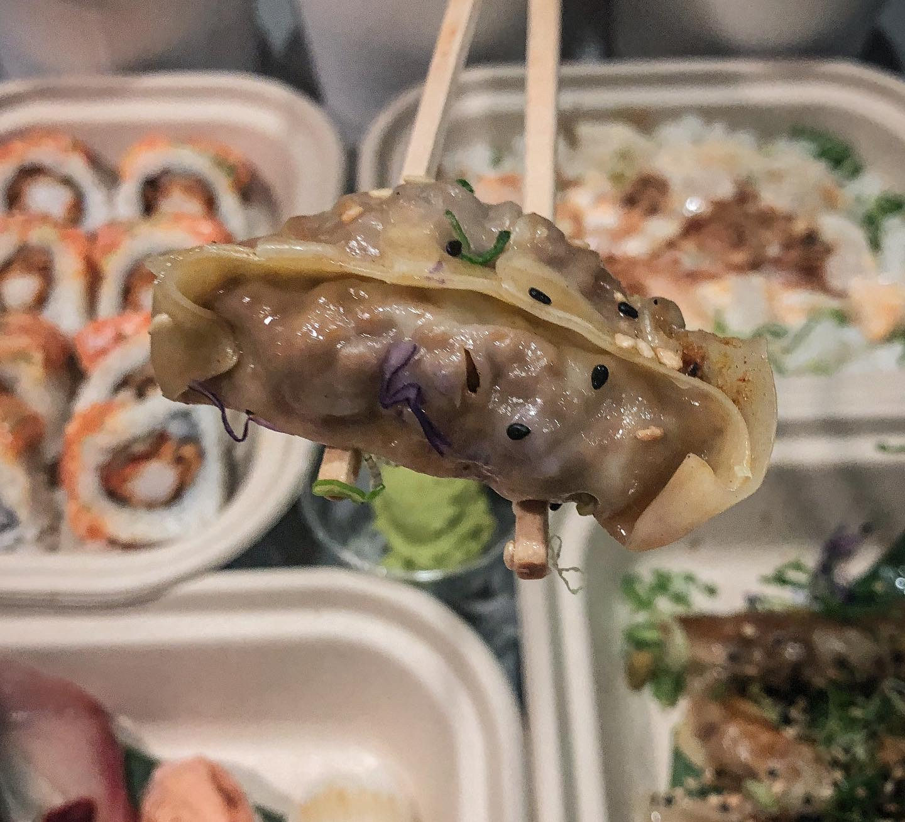

Los dumplings son una especie de empanadas originarias
de la provincia de Cantón, en el sur de China;
su nombre original es dim sum y significa
‘pequeño bocado que toca el corazón’.
Son elaborados con masa de trigo o arroz que se
rellena con carnes, mariscos o vegetales;
pueden cocinarse de formas muy variadas para
identidad a aperitivos particulares
Al vapor, en un fondo o terminadas en la parrilla,
son esa pequeña obra de arte de la cocina
asiática que con sus pliegues hechos con todo
el cuidado, guardan los sabores más ricos en su interior.
Aunque los dumplings son originarios de China,
son la interpretación de una preparación
presente en todas las culturas del planeta: las empanadas.
Hacer una masa y rellenarla con productos endémicos ha
resultado en maravillosos pastes, el pierogi polaco,
la versión argentina y un sinfín de otros ejemplos.

El tipo de cierre que tiene este bocadillo es muy parecido al de una empanada argentina.
UNA RECETA PARA COCINAR EN CASA
Ingredientes
Para la masa
100 gramos de harina
1 pizca de sal
1 cucharada de aceite
Agua hirviendo
Un toque de fecula de maiz
Para el relleno
300n gramos de carne de cerdo
1/2 cebolla picada
jengibre fresco picado
1 diente de ajo
salsa de soya
Para la salsa
Salsa de soya
Miel
Procedimiento
Para la masa
Mezclar en un bowl los ingredientes secos: la harina y la sal.
Agregar poco a poco el agua hirviendo y revolver hasta tener una mezcla homogénea.
Amasar durante un buen tiempo hasta que quede elástica.
Dejarla reposar 15 minutos.
Poner un poco de fécula de maíz en la mesa y estirar la masa y formar círculos. (Puedes ayudarte de un vaso para hacer los cortes).
Para el relleno
Machacar el jengibre con el ajo, la cebolla picada y la carne de cerdo.
Añadir un chorrito de salsa de soya y revolver.
Dejar en reposo durante una hora.
Formar los dumplings
Tomar un disco de masa y poner en el centro el relleno. Cerrar y poner una gotita de agua en los bordes;
aplastar uno con otro de modo que no se abran.
Repetir el proceso hasta terminar con todos los dumplings.